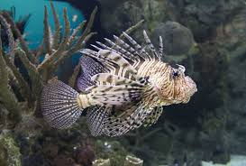

Lion Fish

Ikan lionfish di Indonesia dikenal dengan berbagai nama seperti ikan singa, ikan lepu, atau ikan lepu ayam. Ikan ini termasuk dalam genus Pterois dan merupakan ikan laut berbisa yang dikenal karena duri-duri beracunnya. Ikan lionfish asli Indo-Pasifik, tetapi telah menjadi spesies invasif di beberapa wilayah lain, termasuk di Atlantik Barat.
Ikan lionfish memiliki sirip yang panjang dan menjuntai, serta warna yang bervariasi, seperti merah, coklat, oranye, kuning, hitam, dan putih.
Ikan lionfish dapat ditemukan di berbagai wilayah di Indonesia, termasuk di terumbu karang yang masih bersih seperti di Taman Laut Bunaken, Kepulauan Alor, dan Karimunjawa.